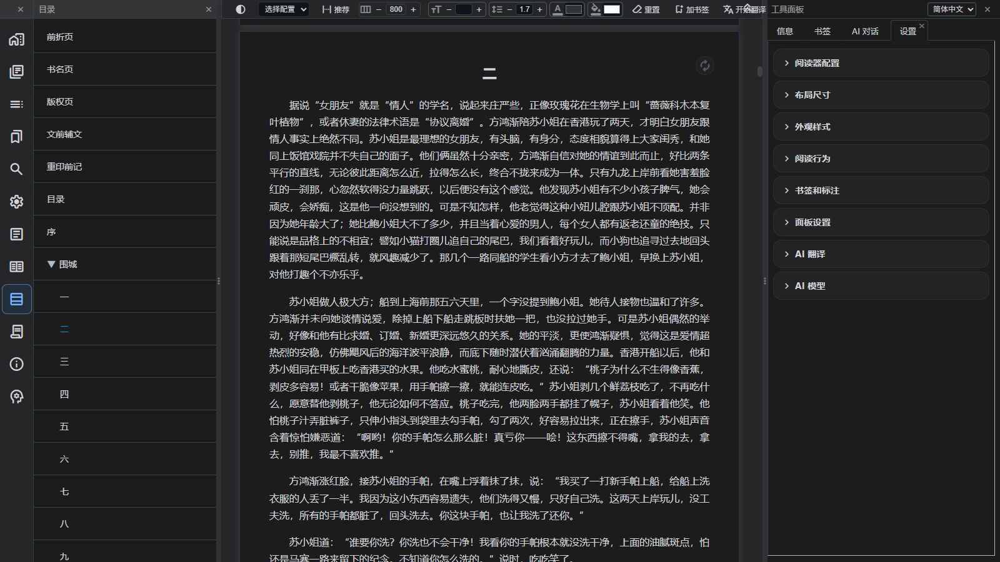

阅读界面速览
阅读器分四块：左侧工具栏、正文区、右侧面板，一条浮在正文上方的快捷工具条。

左侧工具栏
最左边一列竖排按钮，打开面板、切换阅读模式都从这里开始。再点一次同一个按钮会收起对应的面板。
| 按钮 | 作用 |
|---|---|
| 书架 | 回到书架 |
| 挑一本书 | 从书架上换一本书 |
| 显示/隐藏目录 | 显示或隐藏章节目录 |
| 书签 | 打开书签面板 |
| 搜索 | 在本书内搜索文字 |
| 设置 | 打开阅读设置面板 |
| 单页模式 / 双页模式 / 连续模式 / 单章连续模式 | 切换阅读模式 |
| 显示书籍元数据 | 查看这本书的信息 |
| AI 对话 | 打开基于本书的 AI 问答 |
快捷工具条
浮在正文上方的一条工具栏，管的是「怎么显示」：
- 明暗主题、字体、字号、行距、文字颜色、背景色，以及「重置外观」。
- 宽度与「推荐」；分页模式下还有顶部留白、底部留白。
- 加书签、开始翻译。
- 右上角的箭头可以隐藏或重新显示这一条。
正文区
连续模式下上下滚动；分页模式下左右翻页。翻到一章的开头或结尾时，可以继续翻到下一章。
右侧面板
目录、书签、搜索、设置、AI 对话、书籍信息都从右侧滑出，同一时间只显示一个。
选中文字之后
在正文里选中文字会弹出操作菜单：拷贝、笔记、书签、马克笔、直线、波浪线、搜索、翻译、AI，以及五种颜色。详见 笔记与标注。